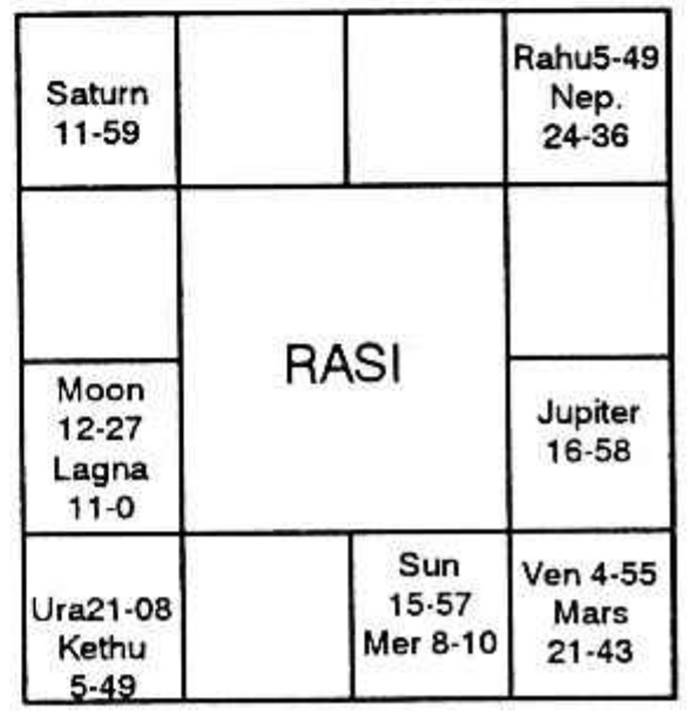
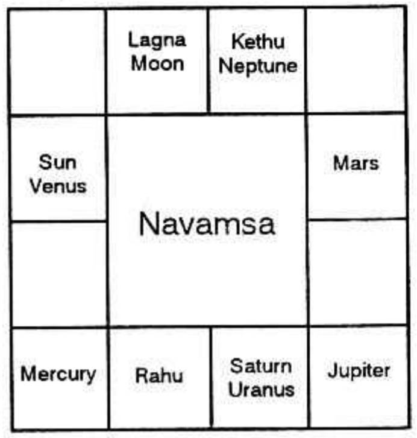

Even though one is entitled for pension from the time of retirement why there is delay in a few cases? Whose fault is it? Government or your action in the previous birth or your service in this birth!
A member puts this question within himself, after he has become dejected with the slow speed of the authorities concerned regarding the settlement of his pension. His horoscope and the facts are as under.


Born on 1-11-1908, entered into service on 14-7-1927 and gave notice for retirement in June 1961 and retired on 19-9-1961. Pension is not yet settled. Indeed, four years and three months have passed and the pensioner has waited for 51 long months in these costly days. Now, he puts the question ‘Whose fault is it?’
The correct answer is his “Fate”. Why? When some are receiving their pension regularly and their accounts are settled around the time of retirement, if this person is put into inconvenience, what will a few philosophers and fatalists say except to confirm that he would have been working probably as an officer in his previous birth and he would not have paid in time either the salary or the pension to the servants, then. That is why, his delayed action in his previous birth, has caused this undue delay in this birth. This is the appropriate answer in accordance with Karma and Reincarnation Theory.
In practical life, the above is for consolation. But the same can be explained by the astrologers applying the various principles of astrology.
The appointment was made when the person had been running Rahu Dasa, Jupiter Bhukti and Venus Anthra on 14-7-1927, on a Poorvashada star cay when Moon was transiting (though in the 12th sign) yet in the sign owned by Jupiter and the star governed by Venus, lord of the 10th house, indicating profession.
The date of retirement came in Saturn Dasa, Mercury Bhukti, Venus Anthra, Rahu Shookshma, Mercury is the lord of 6, indicating service and is also lord of 9 (12th house to 10), i.e. retirement or leave.
Now, when can he have his account settled? Saturn is lord of 1 and 2. It is in its own constellation. It is strong and hence it can never deny; but, according to its nature it must delay. Generally for settlement of an account one has to scrutinize the houses 2 and 11. If it is pension, as it is concerned with benefit through service the 10th house also is to be included. The 2nd house is not occupied, but it is owned by Saturn. Saturn governs the three stars, Pushya, Anuradha and Uthrapathrapada. No other planet except Saturn occupies the constellation of Saturn. So, Saturn is a very strong indicator. Therefore, the astrologer can boldly declare that whatever may be the delay and however much it can throw obstacles, Saturn must give the full pension before its dasa is over as it is the lord of finance and it is beneficial for money matters. The total dasa period of Saturn is only 19 years and so far the pensioner has enjoyed nearly 8 1/2 years, and another 10 1/2 hopeful years alone are left over. As regards the 11th house, there is no planet, situated in the 11th bhava. But the node Ketu is in 11th house and the stars governed by Ketu are Aswini, Makam and Moolam; Ketu alone is in Moolam. Ketu is a significator. Mars is the lord of the 11th cusp. It governs Mrigasirish, Chitra and Dhanishta stars. Of the planets and the nodes posited in any group of constellations, the nodes are always stronger than the planets and therefore, Rahu in Mrigasirish is to be taken. When the horoscope is scrutinised, Venus conjoined with Mars and aspected by Saturn and also in the constellation of Sun - representing the Government-shows that in Venus Bhukti itself, it will be settled and sanctioned.
Therefore, Saturn Dasa, Venus Bhukti and Rahu Anthra commencing on 12th December, 1965 shows that in its period of 171 days it will receive the attention of the authorities and will be disposed. Mostly the date of disposal would be in Ketu Shookshma. So, the pensioner gains confidence that he will have the pension between 10-3-66 and 18-3-66.
According to transit, the so-called sade-sati i.e. the evil 7 1/2 years Saturn period will be coming to an end and Saturn, the dasanatha will be in Jupiter’s star and Ketu sub. Jupiter will be transiting in the constellation of Mars and in the sub of Saturn which is the lord of 2nd house. Venus, the bhukti lord, will conjoin with the Ascendant in direct motion and transit in Lagna Bhava.
Therefore, astrology offers both peace of mind and also a consolation for the delay as well as the mind to live on hopes till 12-3-1966, when it will be sanctioned.
Even here Saturn will play its role. 12th March happens to be a Saturday. What if? A second Saturday in the month of March. So, it is a holiday and hence one is to wait for next Monday. Now one may ask “Is not the lord of the star stronger than the lord of day”? If it is to be strictly followed, should not one find out where Moon will be transiting on that Saturday and note the lord of the star. “Oh God!” says the astrologer, leaning back on the easy chair - The star is Anuradha. It is governed again by the delaying Saturn. That is why probably, our ancestors have given Saturn, the last day of the week, to be governed by it. Otherwise, in the middle of the week, it may throw obstacles and cause difficulties. Saturn is a friend for people who are very slow and a foe for fair deal. If this paper moves slowly similar to Saturn in the Heavens it is only due to his Saturn Dasa and not the Government.
He gathers courage and asks the astrologer “If my pension will be settled before this official year, then shall I get the increment due to me, when I was in service? The authorities regularly gave me increment in the same scale of pay for the same post held by me from September, 1955 till 1960. Only the increment for 1961 remains to be paid”.
The astrologer says within himself “I pity with you. God also hears your prayers. Authorities are reminded periodically. But what God or the Government can do, when your fate is so strong that the authorities cannot settle your account in these 51 months and another couple of months to come.
At any rate, on the above date, Saturn will knock at your gate and say “Late is due to your fate”. Actually, the date of Sanction was 26-3-66.